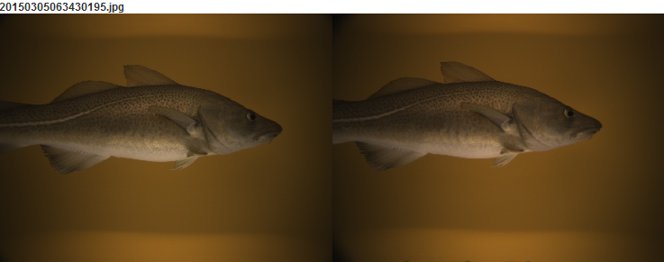

This module shows the images recorded by Deep Vision for the currently selected frame.

The buttons below the images are:
Play backwards.
Play forwards.
Step backwards. Hold to step through several frames. Use Ctrl + Click to search.
Step forwards. Hold to step through several frames. Use Ctrl + Click to search.
In addition, the mouse wheel can be used to step forwards and backwards.
The play speed is specified as images per second.
Settings
Show left image:
Shows the left eye image.
Show right image:
Shows the right eye image.
Show only images marked as active:
Shows only the images marked as active in the Deep Vision file.
The play and step functionality will skip the inactive images if this option is enabled.